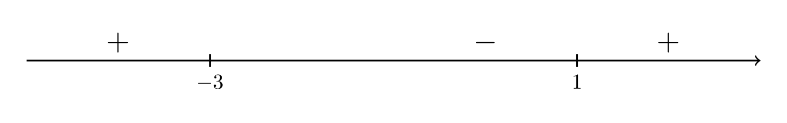

Intervals of Increase & Decrease
Contents
Intervals of Increase & Decrease#
Definition
A function \(f\) is increasing on the interval \((a,b)\) if for any two numbers \(c\) and \(d\) in \((a,b)\), \(f(c) < f(d)\) whenever \(c<d\).
Theorem
If \(f'(x) > 0\) for all \(x\) in the interval \((a,b)\), then \(f\) is increasing on \((a,b)\).
Long Text Description
There is a horizontal axis with the points a, c, d, and b marked. It is noted that c is less than d. There is a vertical axis with the points f(c) and f(d) marked. It is noted that f(c) is less than f(d). The graph of the function f is plotted on these axes. The value of the function goes up as it goes from left to right. The point (c,f(c)) and there are red dashed lines going from these points to (c,0) and (0,f(c)). The point (d,f(d)) and there are red dashed lines going from these points to (d,0) and (0,f(d)).
Definition
A function \(f\) is decreasing on the interval \((a,b)\) if for any two numbers \(c\) and \(d\) in \((a,b)\), \(f(c) > f(d)\) whenever \(c<d\).
Long Text Description
There is a horizontal axis with the points a, c, d, and b marked. It is noted that c is less than d. There is a vertical axis with the points f(d) and f(c) marked. It is noted that f(c) is more than f(d). The graph of the function f is plotted on these axes. The value of the function goes down as it goes from left to right. The point (c,f(c)) and there are red dashed lines going from these points to (c,0) and (0,f(c)). The point (d,f(d)) and there are red dashed lines going from these points to (d,0) and (0,f(d)).
Theorem
If \(f'(x) < 0\) for all \(x\) in the interval \((a,b)\), then \(f\) is decreasing on \((a,b)\).
Example 1#
The following is the graph of a continuous function that is increasing on the intervals \((1,2)\) and \((4,6)\) and decreasing on the intervals \((2,4)\) and \((6,7)\).
Long Text Description
There is a horizontal x axis with the points 1, 2, 3, 4, 5, 6, and 7 marked. There is a vertical y axis with no points marked. The graph of some function is plotted here. The graph moves consistently upward as it goes from x = 1 to x = 2, moves consistently downward as it goes from x = 2 to x = 3, moves consistently downward as it goes from x = 3 to x = 4, moves consistently upward as it goes from x = 4 to x = 5, moves consistently upward as it goes from x = 5 to x = 6, moves consistently downward as it goes from x = 6 to x = 7. The graph has rounded corners at x = 2 and 4, and has a sharp corner at x = 6.
Finding Intervals of Increase/Decrease using the Derivative#
Follow these steps
Find all values of \(x\) such that \(f'(x) = 0\) or \(f'(x)\) does not exist.
Break up domain of \(f\) into open intervals between values found in Step 1.
Evaluate \(f'(x)\) at one value, \(c\), from each interval, \((a,b)\), found in Step 2.
If \(f'(c) > 0\), then \(f\) is increasing on \((a,b)\).
If \(f'(c) < 0\), then \(f\) is decreasing on \((a,b)\).
Example 2#
Determine the intervals where
is increasing and where it is decreasing.
Step 1: Compute \(f'(x)\).
Step 2: Find all values of \(x\) such that \(f'(x) = 0\).
which is equal to zero when \(x=-3\) and \(x=1\).
Step 3: Find all values of \(x\) such that \(f'(x)\) does not exist.
Notice that \(f'(x)\) is defined for all real numbers.
Step 4: Break up the domain of \(f\) into subintervals based on the values found in Steps 2 and 3.
Since we found \(x=-3\) and \(x=1\) to be the only values where \(f'(x)\) could change sign, we break up the domain of \(f\) (which is \((-\infty,\infty)\)) into the following subintervals:
Step 5: Plug one number from each subinterval into \(f'(x)\) to determine the sign of \(f'(x)\).
\(\mathbf{(-\infty,-3)}\): Plug \(x=-4\) into \(f'(x)\). Since \(f'(-4) = 3(-1)(-5) > 0\), \(f\) is increasing on \((-\infty,-3)\).
\(\mathbf{(-3,1)}\): Plug \(x=0\) into \(f'(x)\). Since \(f'(0) = 3(3)(-1) < 0\), \(f\) is decreasing on \((-3,1)\).
\(\mathbf{(1,\infty)}\): Plug \(x=2\) into \(f'(x)\).
Since \(f'(2) = 3(5)(1) > 0\),
\(f\) is increasing on \((1,\infty)\).
Graphical representation of sign analysis#
We will typically represent the above sign analysis by drawing a number line, marking off the values in the domain of \(f\) such that \(f'(x) = 0\) or \(f'(x)\) does not exist, and then putting a \(+\) or \(-\) above each interval according to the sign of \(f'(c)\), where \(c\) is the test value taken from the corresponding interval. The number line associated with the calculations in Example 2 is shown below.
{kind=link}
Long Text Description
A number line with positive and negative signs assigned to intervals, with positive to the left of negative three, negative between negative three and one, and positive to the right of one.